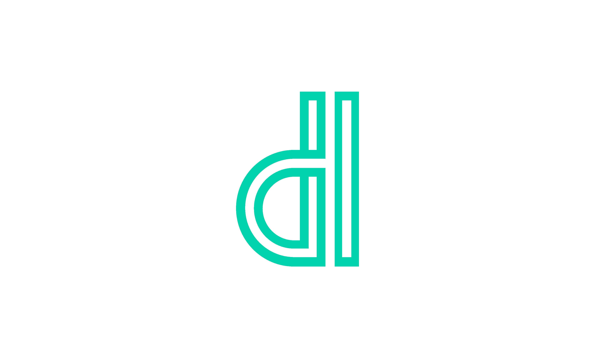
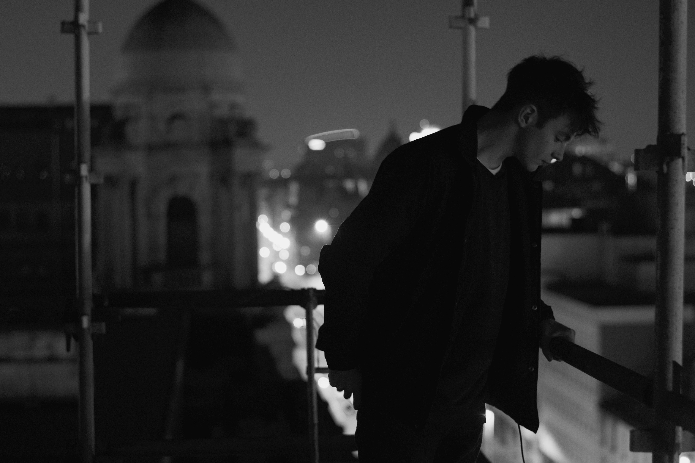
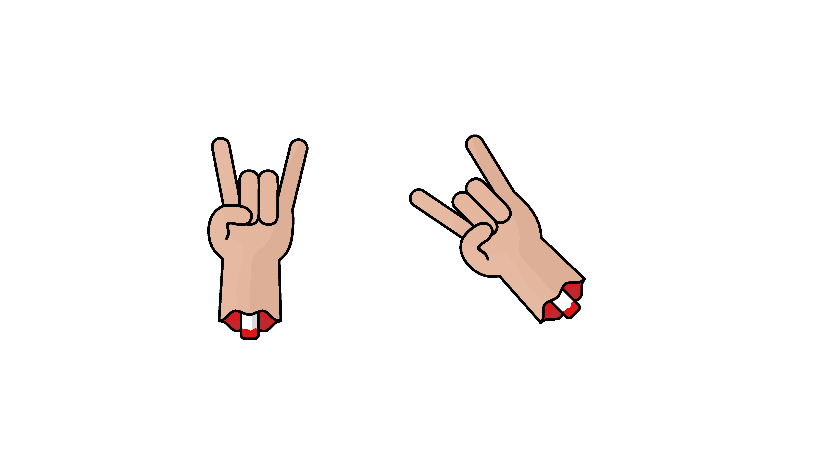
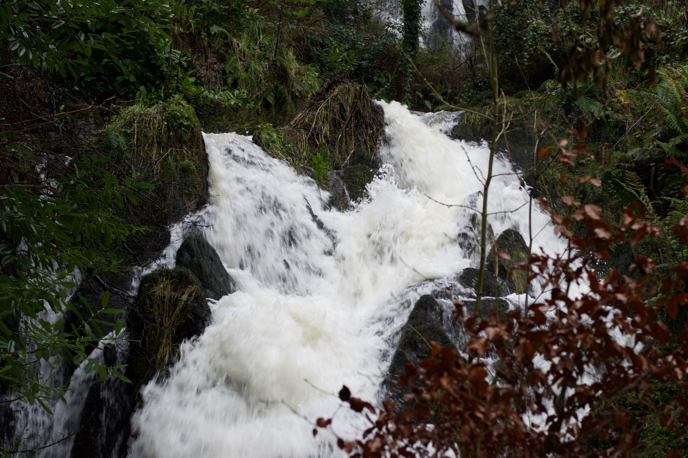
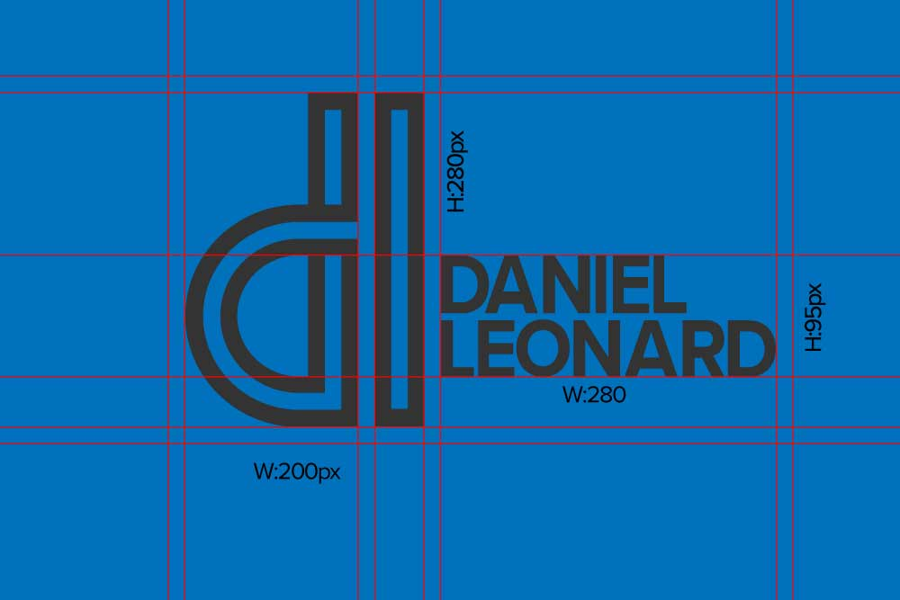
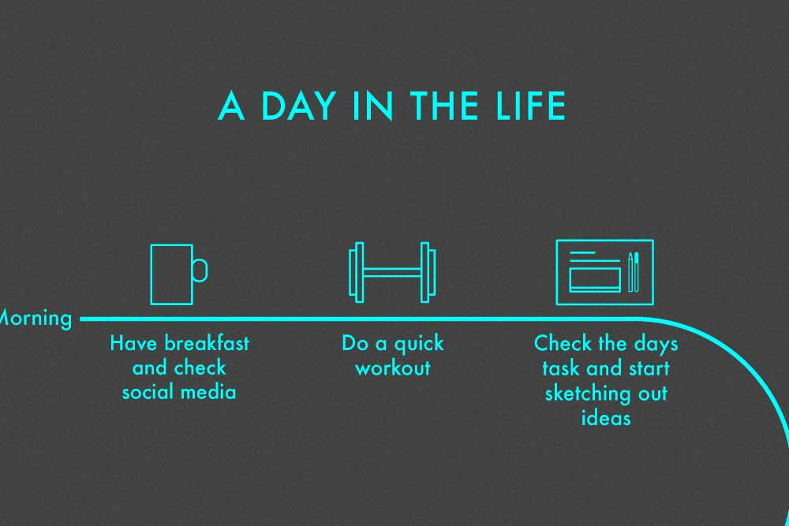
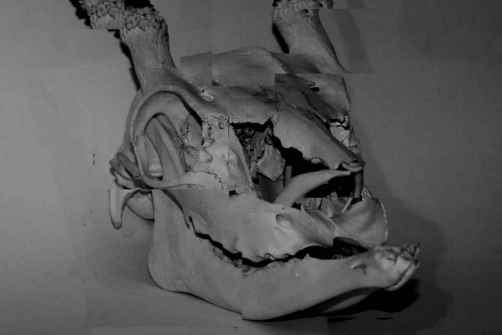

Daniel leonard
Style Guide
Colour Palette
The colour palette for the dl brand follows 5 colours that are based of the main colour of the monogram, which is turquoise. The colours are designed to compliment each other and provided some diversity when designing things based around the brand. The colour palette is there incase certains things need to be higlighted like links or things like buttons

Type Style
H1 HEADING
H2 HEADING
H3 HEADING
To keep everything consistent the type face must be Proxima Nova. It has a very large font family with a large variety of font weights and styles. The main reason for using the font Proxima Nova is that the the dl brand wordmark uses this font. The text must also be centered.
Imagery
All the media is to be in black and white as it gives it a certain rawness, however in some cases coloured images may be used depending on the context. The likes of header images should be kept in blacka nd white however

Visual Mark
The dl visual mark is a standalone feature to the monogram and wordmark. It may be used in rare cases for certain pieces of work. But for formal pieces of work the monogram and wordmark must be used.

Interface and links
This is an example of how the gallery might look. It follows the guideline that the images must be in black and white. The user is reminded that they can click on the gallery with a hover affect.
-

Features
- 
The Blog
-
PHOTOGRAPHY
-

Film
- 
BRANDING
-

ILLUSTRATION
- 
Data
- 
Experimentation
Icons
These are some of the icons that will be used in the final design of the web-site. They will be in black and white and white and have a slightly rounded edge to keep them looking soft.